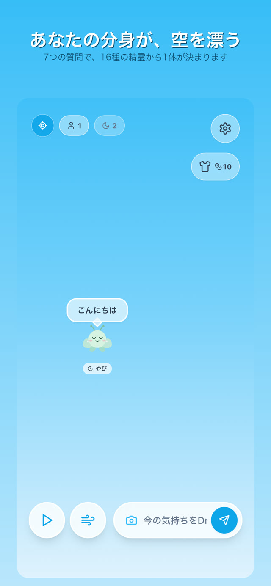
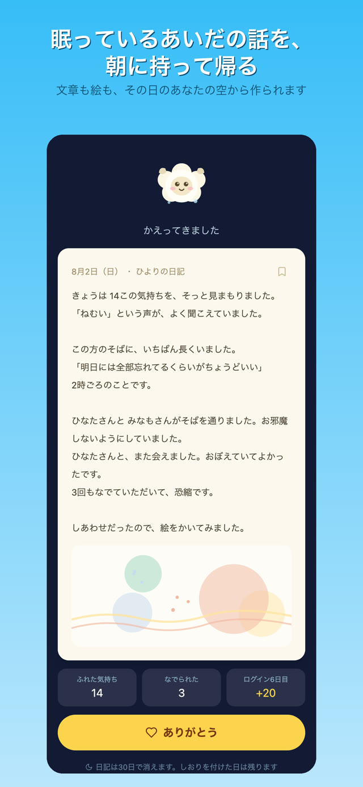

診断から、風、そして朝の日記まで。
数を競う仕組みを、はじめから入れていません。
16種類から1体。一生あなただけの分身で、途中で変わることはありません。種族ごとに、空でのふるまいも日記の文体も違います。
短い言葉が精霊の吹き出しになって漂います。応えてくれた人とは5分だけ話せて、そのあとは静かに消えます。
風を吹かせると、まわりの精霊が渦に巻き込まれて集まります。巻き込まれた者どうしは、かならずすれ違います。
その日すれ違った相手や、もらったお茶を日記にして、朝に持って帰ってきます。文章も絵も、二度と同じにはなりません。

